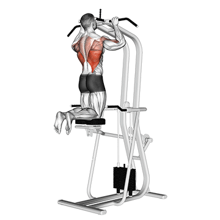
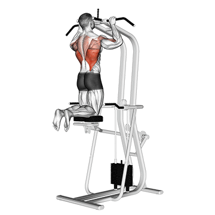
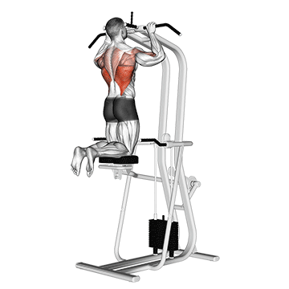
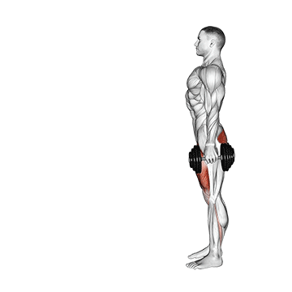
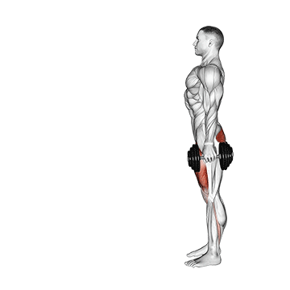

exercicios para as costas trapézio, o latíssimo do dorso, o rombóide maior e menor, o infraespinhal e o supraespinhal

exercicios de peito para cada musculo músculo peitoral maior e peitoral menor


exercicios de bdomean o reto, o oblíquo externo e o oblíquo interno

exercicios para a coxaparte interna, posterior e externa

 
